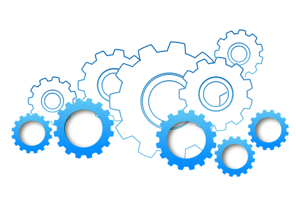

PCM - Planejamento e Controle da Manutenção
Com esse site você pode otimizar seu tempo e facilitar seu aprovisionamento de peças para uma manutenção mais rápida e eficaz.

Com esse site você pode otimizar seu tempo e facilitar seu aprovisionamento de peças para uma manutenção mais rápida e eficaz.
 Todos os direitos reservados
Todos os direitos reservados